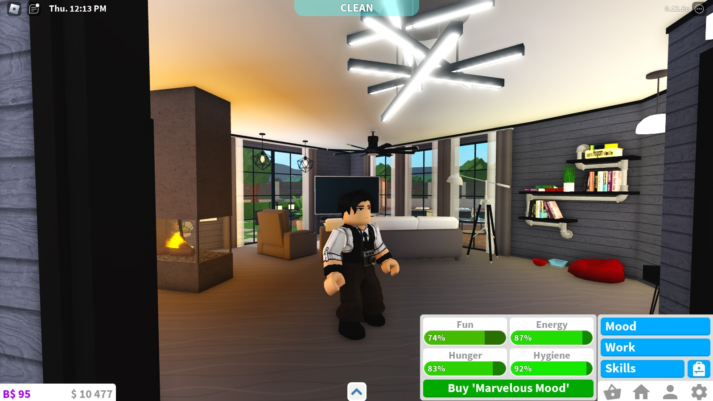

Welcome to Bloxburg
เป็น Map Roblox เเนวใช้ชีวิตหรือก็คือ Simulation เป็นเกมเเนวจำลองนั้นเอง เกมนี้จะคล้ายๆกับเกม The Sims ที่ทุกคนรู้จัก Map Welcome to Bloxburg นี้เราจะต้องใช้ชีวิตประจำวันกินข้าวทำงานหรือทำให้ตัวละครของเรามีความสุขเเละสอาด ใช้เเล้วครับเกมนี้เหมือน The Sims เลยทั้งการตกเเต่งบ้านตกเเต่งสวนของเรา เเต่การทำงานหาเงินของเกมนี้จะมี Minigame ที่สนุกเเละท้าทายกว่า เพราะเราต้องเล่นด้วยตนเองใช้ความสามารถของเราเอง เช่น เราทำงานร้านอาหารก็จะมี Minigame ให้เราทำอาหารตามเมนูที่ลูกค้าสั่ง หรือ เป็นแคชเชียร์เราก็ต้องคิดเงินให้ลูกค้า เเละงานอื่นๆอีกเยอะทีมีMinigameสนุกๆให้เล่น เลยทำให้เกมนี้สนุกมากๆเเละยังสามารถเล่นกับผู้เล่นคนอื่นๆได้อีกด้วย เเละ Map Welcome to Bloxburg ยังมีคนเล่นเยอะมากๆจนถึงปัจจุบัน
